Here's some photos taken from the AMC Metreon Theater in San Francisco, from CalHacks 11.0. I spent most of the hackathon finishing this project, though the vibes were pretty great.
Let's make panoramas!! Yay!!
Part 2. Image Warping
The main step in creating our image mosaics is computing the homography that determines the transformation between the two images. With our pre- and post- transformation points as (x, y) and (x', y'), we have:
To find the values a, b, etc to build our matrix, we solve the following equation using least squares:
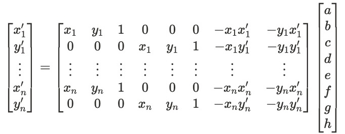
(Equation images from Aayush Gupta's Fall 2023 project website)
Warping image 1 to meet image 2, and image 2 to meet image 1, produces the following.
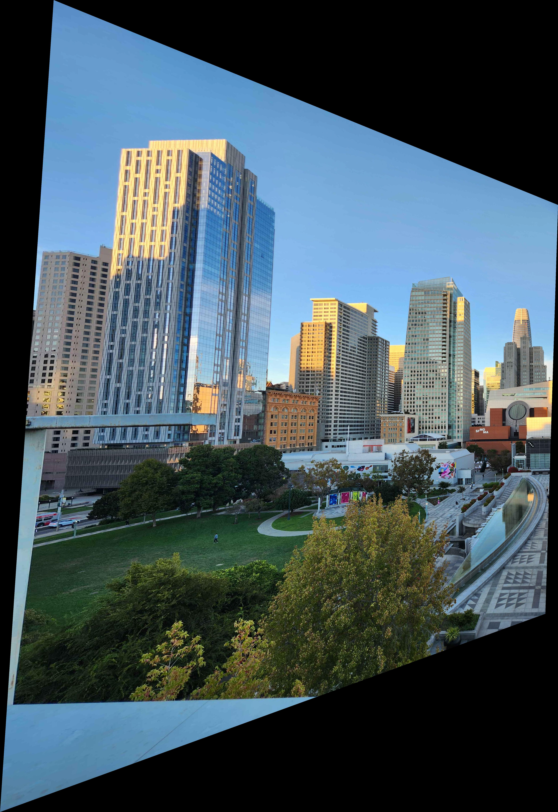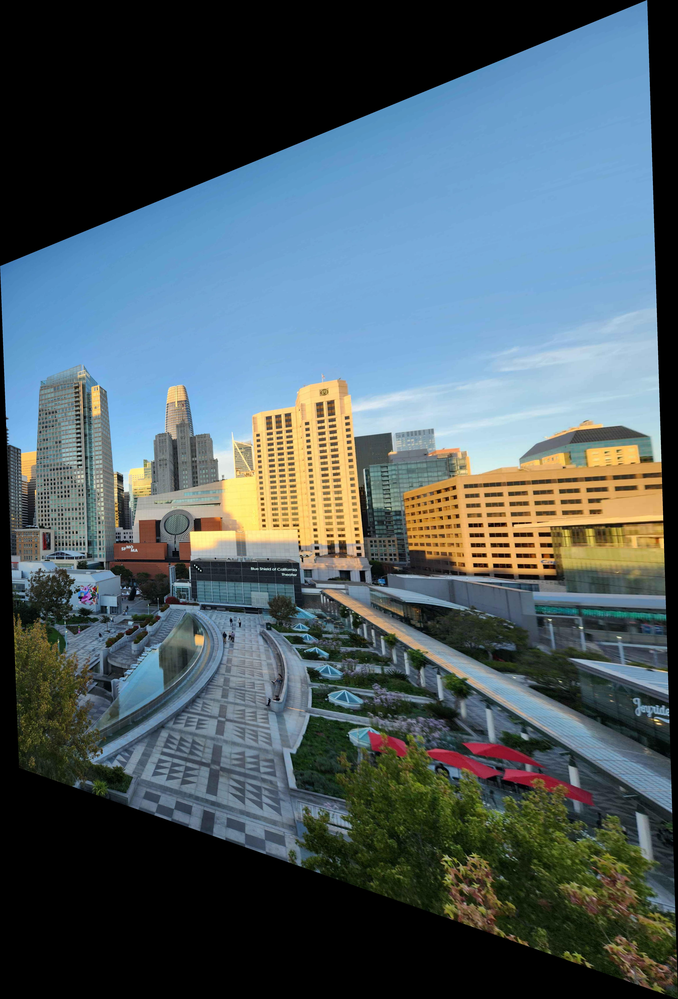
Part 3. Image Rectification
Here's a picture of some pretty creatively decorated trash cans from CalHacks.
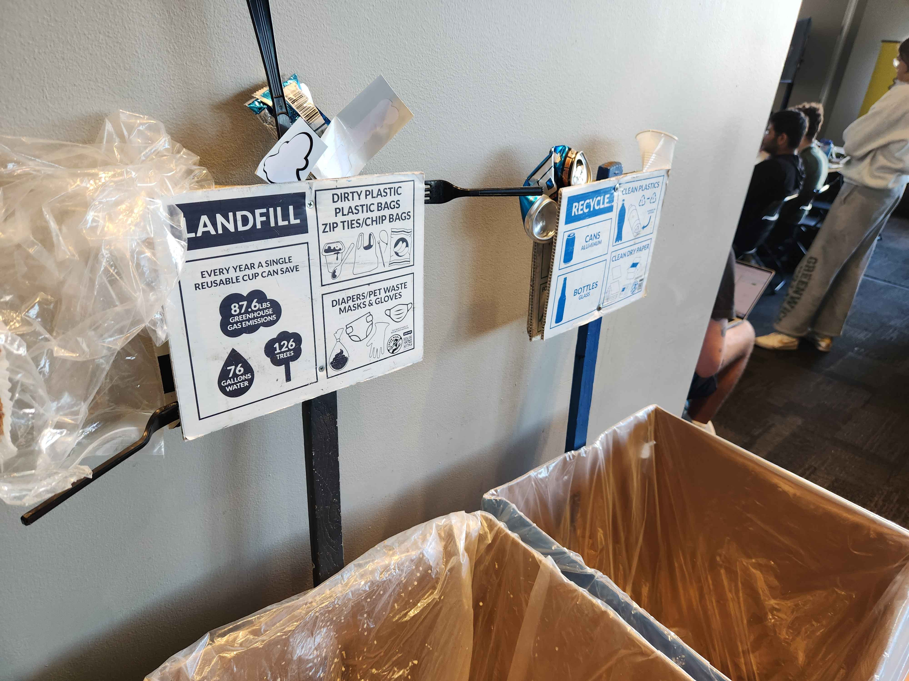
By getting the coordinates for the 4 corners of the trash sign and computing a homography between those corners and a rectangle, we can rectify the sign quite nicely.
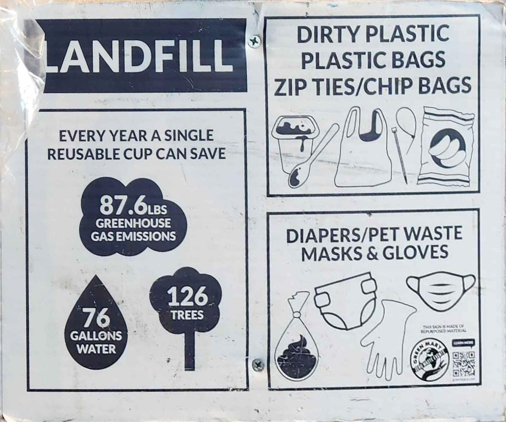
Part 4. Image Mosaics
To complete our final mosaic, we first need to generate a set of masks to help composite the images together. Here are masks representing the locations of data from only image 1, only image 2, their intersection, and their union.
Additionally, to make the transition between the images more natural, we have a linear seam Gaussian mask centered on the mean of the centroids of the two images.
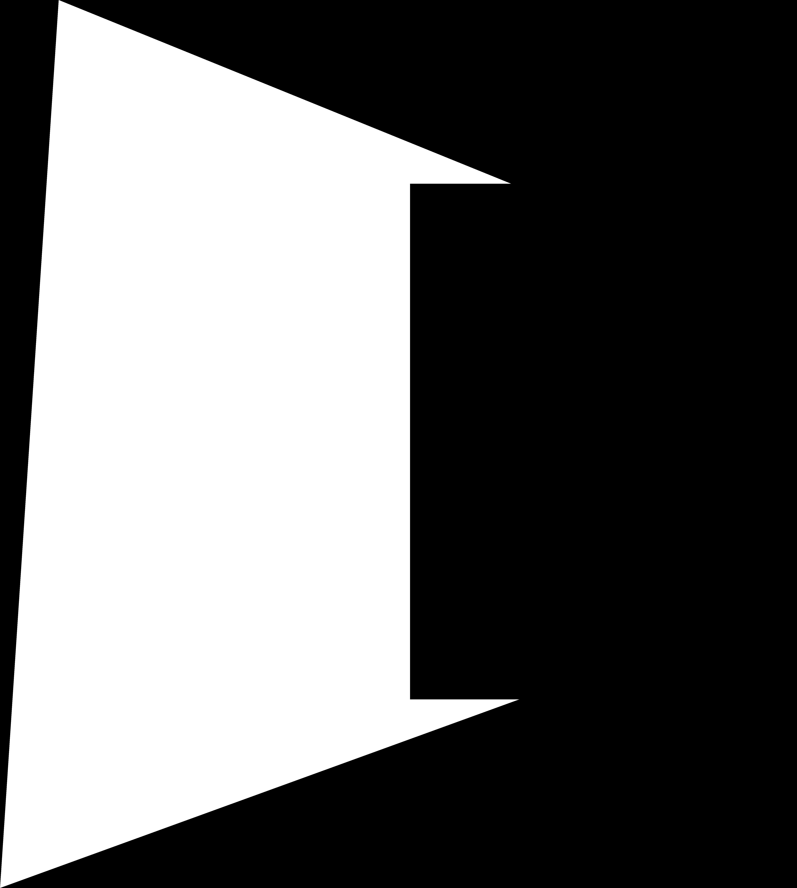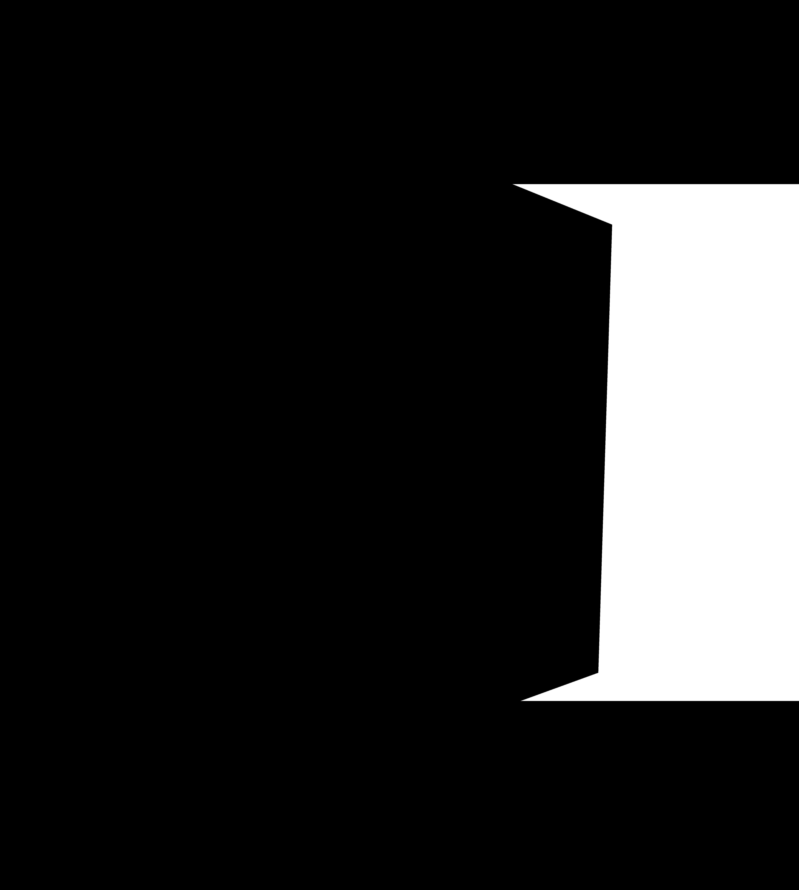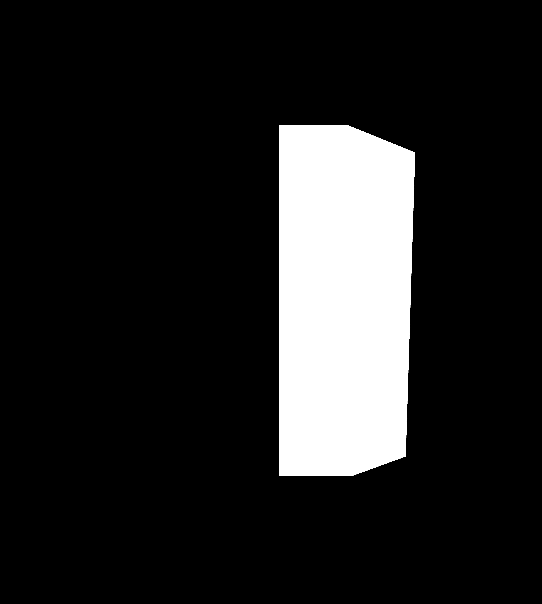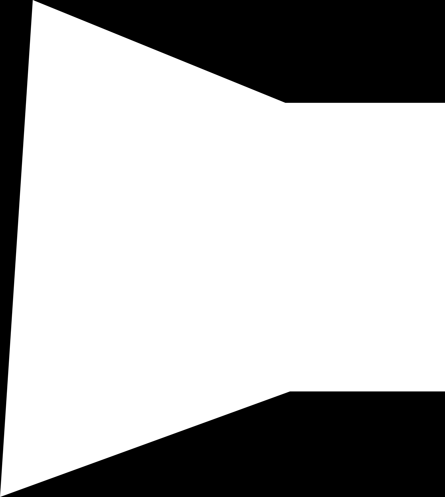
Warping the images to each other produces the following:
Here's a similar mosaic of photos of the familiar Soda Hall.
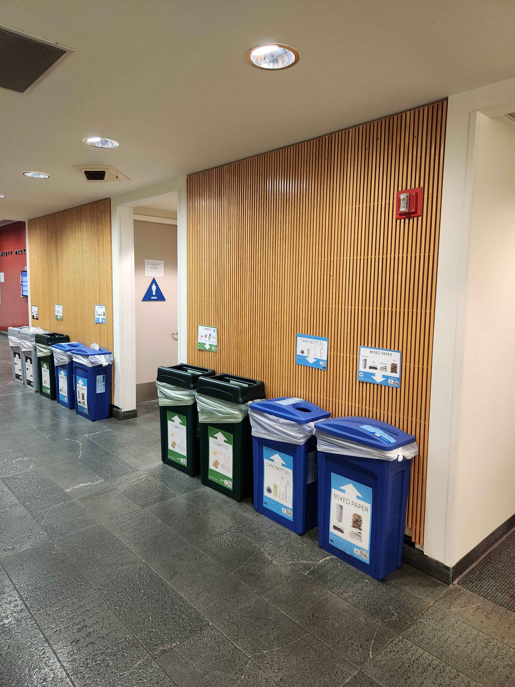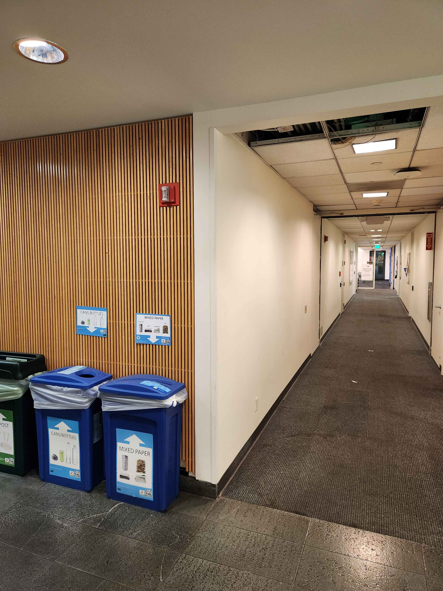
Acknowledgements
This project is a course project for CS 180. Website template is used with permission from Bill Zheng in the Fall 2023 iteration of the class.